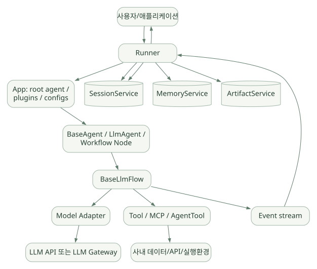

핵심 원리 / 단원 03
이벤트와 저장의 수명주기
Invocation · Session · State · Memory · Artifact를 분리하기
먼저 연결해 보기
요청 하나는 Invocation이고, 그 안에서 여러 모델·도구 호출이 일어날 수 있습니다. 각 단계의 Event는 단순한 답변 문장보다 많은 정보를 전달하며, Session과 State 변경을 이해하는 연결점이 됩니다.
저장된 기록 전체가 매번 모델 입력이 되는 것은 아닙니다. 현재 State, 검색할 Memory, 파일 Artifact와 모델 Context를 나누고, 임시 상태의 지속 범위와 Compaction의 손실 가능성까지 살펴보세요.
읽는 관점무엇이 저장되는지, 언제 사라지는지, 무엇이 실제 모델 입력으로 들어가는지 각각 확인하세요.
10. ADK 아키텍처: Agent가 아니라 실행 시스템으로 보기#
넓은 도식은 가로로 이동하며 읽을 수 있습니다. 도식 크게 보기 ↗

원문에 수록된 학습용 도식입니다. 노드·화살표·분기 라벨을 보존해 다시 배치했습니다. 세부 조건과 예시·구현의 구분은 앞뒤 본문을 함께 읽으세요.
도식 원문 보기 (Mermaid)
flowchart TD
U[사용자/애플리케이션] --> RT[Runner]
RT --> APP[App: root agent / plugins / configs]
RT --> SS[(SessionService)]
RT --> MS[(MemoryService)]
RT --> AS[(ArtifactService)]
APP --> AG[BaseAgent / LlmAgent / Workflow Node]
AG --> FLOW[BaseLlmFlow]
FLOW --> LL[Model Adapter]
LL --> API[LLM API 또는 LLM Gateway]
FLOW --> TOOL[Tool / MCP / AgentTool]
TOOL --> EXT[사내 데이터/API/실행환경]
FLOW --> EV[Event stream]
EV --> RT
RT --> SS
RT --> U이 다이어그램은 학습용 개념도로서 세부 callback 순서나 모듈 참조관계를 1:1 복제한 것은 아니다. v2.13.0에서 Runner는 App, Agent/Node, PluginManager 및 Session/Memory/Artifact/Credential 서비스를 관리한다. LlmAgent._run_async_impl은 self._llm_flow.run_async(ctx)를 실행하며 이벤트를 yield한다. [S01][S02]
누가 무엇을 책임지는가?#
- 개발자: Tool 구현, Agent 정의, App 설정, 저장소 선택, 접근 통제, 응답 검증, 사용자 UI.
- Runner: 입력을 세션에 연결, 실행 컨텍스트/이벤트 관리, 서비스 상호작용, 이벤트 전달, 중단·재개 통합.
- Agent / Workflow: 어떤 작업자를 어떤 순서로 실행할지, 어떤 모델/도구를 사용할지.
- LLM Flow: 모델 요청 구성, 모델 호출, 도구 호출 후처리, 반복 종료 조건.
- 서비스 백엔드: Session 이벤트 및 State, Memory 검색, 파일 결과물 저장.
11. Event가 핵심인 이유#
일반 채팅 로그는 보통 role, content 중심이다. ADK의 Event는 대화 텍스트뿐 아니라 동작·상태·흐름 제어를 함께 표현한다. [D05][D13]
| Event 정보 | 개념적 역할 | 분석 시 질문 |
|---|---|---|
author |
이벤트를 생성한 주체 | 어느 Agent/사용자인가? |
content |
텍스트, Tool Call/Response 등 | 실제 어떤 입력·출력이 발생했는가? |
invocation_id |
실행 단위 식별 | 어느 요청에서 생성됐나? |
branch / isolation_scope |
이벤트 가시성·실행 분기 | 다른 하위 Agent의 기록을 볼 수 있는가? |
actions |
상태 변경, 전환, escalate 등의 신호 | 무엇을 바꾸거나 전환했나? |
partial |
Streaming 중간 이벤트 | 최종 완료 이벤트와 구분했는가? |
output / route / node_info |
그래프 노드 출력·경로·메타데이터 | 그래프에서 다음 노드가 누구인가? |
중요: Event는 Session에 저장될 수 있는 실행 이력의 구성 요소다. Event를 단순히 ‘LLM이 답한 문장 하나’라고 이해하면 State 업데이트, 승인 중단, Workflow 노드 간 데이터 전달을 설명할 수 없다.
12. Invocation, Turn, Session의 관계#
Application: semiconductor_agent
User: engineer_01
Session: conversation_20261029_A
- Invocation 1: "CD 공정이 뭐야?"
Event 1: User Content
Event 2: Tool Call
Event 3: Tool Response
Event 4: Final Response
- Invocation 2: "이전 데이터와 비교해"
Event 5: User Content
Event 6: Model / Tool events ...
User: engineer_02
Session: separate_conversation ...Session= 여러 차례 요청이 이어지는 대화 맥락.Invocation= Agent 실행 요청 1회(내부에서 여러 모델 호출/Tool 호출 가능).Event= Invocation 실행 중 발생하는 개별 메시지/상태 변화.Turn이라는 표현은 문서 및 평가에서 사용자와 Agent의 한 번의 상호작용을 가리킬 수 있다. 정확한 경계는 평가/실행 API 문맥 확인.
13. Session과 SessionService#
세션은 app_name, user_id, session_id, events, state 등을 포함한다. SessionService가 생성/조회/이벤트 저장과 상태 반영을 수행한다. [D04][D05]
| 구현 | 적합한 환경 | 주의점 |
|---|---|---|
InMemorySessionService |
로컬 예제/단위 테스트 | 프로세스 재시작 시 소실 |
DatabaseSessionService |
DB 기반 지속성 | DB 스키마, 트랜잭션, 운영 책임 |
VertexAiSessionService |
Google Cloud 기반 관리형 저장 | 클라우드 사용 권한·데이터 정책 |
| MongoDB 계열 | 특정 운영 DB와 통합 | v2.13.0 신규 기능·배포 검증 필요 |
제안: 반도체 기술 데모에서는 재현과 감사 추적이 필요하므로 지속형 Session 저장소를 기본으로 검토하되, 제품 설계 전에는 데이터 보존 정책·이벤트 민감정보 익명화 정책부터 정한다.
14. State의 실제 의미와 스코프#
session.state는 키-값 저장소다. 공식 문서는 아래 접두어로 스코프를 구분한다. [D05]
| 키 예제 | 스코프 | 지속성·용도 |
|---|---|---|
selected_metric |
Session | 현재 대화의 검사 항목 |
user:preferred_unit |
사용자 범위 | 사용자의 단위 선호; 저장소에 따라 지속 |
app:default_limit |
앱 전체 | 공통 설정. 민감/변경성 설정은 별도 정책 권장 |
temp:query_plan |
현재 Invocation | 이번 실행의 임시 분석 계획; 호출 종료 후 폐기 |
중요: Python dict를 직접 수정하는 것과 EventActions.state_delta로 상태 변경을 기록·반영하는 것은 다를 수 있다. 공식 문서는 append_event 기반 상태 변경을 권장한다. ToolContext.state[...] 등 도구 컨텍스트를 통해 변경한 내용은 서비스 처리와 이벤트 동기화까지 고려해야 한다. [D05]
반도체 예시#
session.state = {
"selected_metric": "CD_NM",
"selected_lot": "SYNTH_LOT_001",
"temp:analysis_threshold": 2.5,
"user:preferred_unit": "nm"
}여기서 Lot ID는 합성 식별자다. 실제 Lot/Wafer ID가 영구 상태나 공용 로그에 남는지 사내 데이터 거버넌스 정책을 먼저 확인해야 한다.
15. Memory는 Session History와 무엇이 다른가?#
Session History: 현재 대화 스레드의 과거 메시지와 Tool 이벤트.
State: 구조화된 현재 작업 상태.
MemoryService: 장기 보존 또는 별도 검색이 필요한 정보를 서비스에 기록·검색하는 인터페이스. 과거 대화의 내용이나 요약을 기반으로 검색할 수 있지만 실제 색인/검색 품질은 백엔드에 따라 달라진다. [D06]
이전 세션들 ----> MemoryService 저장/색인
|
새 사용자 질문 ----> 검색 요청(search_memory 등)
|
관련 메모리 회수
|
현재 프롬프트에 활용ADK에 MemoryService 인터페이스가 있다 = 고성능 RAG가 자동 완성된다는 뜻이 아니다. 무엇을 저장하고 언제 갱신하며 어떤 점수로 검색하고 어떤 내용만 회수할지는 별도 설계가 필요하다. MemoryService와 외부 기술 문서 RAG(벡터 DB/검색엔진)는 개념상 구분한다.
기억 설계 평가 질문#
- 메모리를 누가 언제 저장하는가: 자동/명시적 호출/후처리?
- 저장 대상: 전체 이벤트, 특정 요약, 사용자 선호, 검증된 사실?
- 검색: 텍스트 매칭, 벡터, 필터, 하이브리드 중 무엇인가?
- 여러 사용자·프로젝트의 메모리는 완전히 격리되는가?
- 삭제 및 정정: 수정 이력이 남는가? 최신/폐기 문서는 무효화되는가?
- 컨텍스트 예산: 몇 개를 불러와 어느 부분에 삽입하는가?
16. Artifact와 Memory의 차이#
ArtifactService는 파일·이미지·보고서·코드 등 상대적으로 큰 결과물의 저장과 버전 관리를 위해 사용한다. InMemoryArtifactService, GCS 기반 구현 등이 문서화돼 있다. [D07]
| 저장할 대상 | 권장 개념 | 이유 |
|---|---|---|
| 이번 대화의 질의·응답 | Session Events | 실행 순서와 맥락 필요 |
| 현재 분석 대상 Lot/변수 | State | 구조화된 상태 필요 |
| 과거 선호·비슷한 문의의 기억 | Memory | 세션 간 검색 필요 |
| 분석 결과 CSV·PNG·보고서 PDF | Artifact | 파일·버전 추적 필요 |
| 공정 SOP 수만 건 | 외부 문서 저장소 + RAG | 전문 검색/권한/문서 버전 필요 |
Memory에 파일 전체를 넣어 ‘저장했다’고 생각하거나, Artifact를 검색 인덱스와 동일하게 취급하면 혼동이 생긴다.
17. Context 관리: 모든 과거 이벤트를 매번 보내지 않는다#
Agent의 Session 저장과 모델에 전달되는 Context는 서로 다른 개념이다. Session은 실행 이력을 저장할 수 있지만, 실제 모델 요청은 컨텍스트 창 한계와 비용을 고려해 내용을 선택·압축한다.
공식 Context Compaction은 오래된 이벤트 내용을 요약하는 방법을 제공하고 EventsCompactionConfig로 간격/토큰 기반 정책을 설정할 수 있다. 토큰 임계값과 최근 이벤트 보존량, sliding-window 간격과 overlap 등을 조정할 수 있다. [D14]
# [공식 구조를 단순화한 설정 예]
from google.adk.apps.app import App, EventsCompactionConfig
app = App(
name="semiconductor_assistant",
root_agent=root_agent,
events_compaction_config=EventsCompactionConfig(
token_threshold=4000,
event_retention_size=5,
),
)Compaction ≠ Long-term Memory ≠ Context Caching
- Compaction: 과거 대화 이벤트를 요약해 모델 입력 크기를 줄임.
- Memory Search: 필요한 과거 정보를 별도 검색해 불러옴.
- Context Cache: 동일한 프롬프트/도구 목록 등의 재사용을 통해 API 비용·지연을 최적화하는 기법.
v2.13.0의 Runner 소스에는 Invocation 종료 후 best-effort compaction을 수행하고, 다른 요청이 세션을 갱신했으면 오래된 요약을 버리는 로직도 있다. 이는 병행 업데이트와 오래된 요약 덮어쓰기의 위험을 고려한 것으로 해석된다. [S01]
반도체 업무의 수치·검사 조건은 단순 자연어 요약 시 소실되거나 변형될 수 있으므로, 원본 값은 State/DB/Artifact에 보관하고 Compaction은 대화 이해용으로 제한하는 방향을 권장한다.